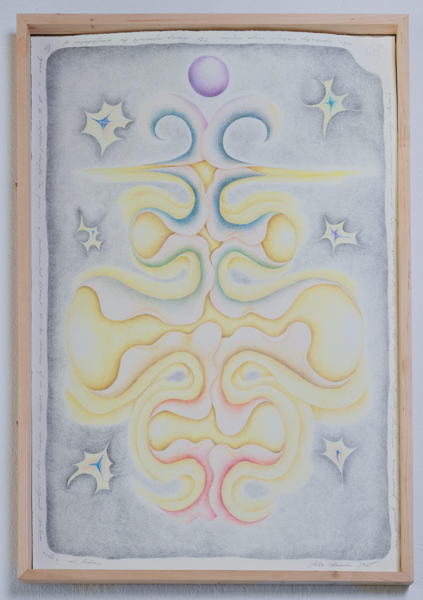

Head, from Feedback series, 78 x 53 cm, 2024
This drawing expresses the desire to be both a warm, emotionally supportive mum and a protector and provider for the child. I try to intergrate those aspects as a layered form of being - many heads in constant motion.
photo: Kasia Rysiak

Thyroid, from Feedback series
78 x 53 cm
2024
This is a visualisation of the thyroid during a painful break up. It shines because it is regenerating. It needs support. Small steps are crucial.
photo: Kasia Rysiak

The Spine from Feedback series
78 x 53 cm
2024
This drawing represents the manifestation of the spine in all its magnificent strengh. The spine is our center of movement - a fundamental elemnt in our everyday existance. It is depicted here in colors symbolising the various chackras within us.
photo: Bartosz Górka

Nose from Feedback series 78 x 53 cm 2024
This drawing represents nose. This element allows for the regulation of emotions and stabilisation in difficult moments. It is the gateway to life, as breath is life. Focusing on the breath helps to fall asleep.
photo: Bartosz Górka
Stimulus, 11 x 8 cm, 2025
photo: Bartosz Górka
Głowa, 60 x 80 cm, 2026
Praca powstała w ramach serii Sprzężenie Zwrotne.
Jest to wizualizacja głowy samodzielnej mamy.